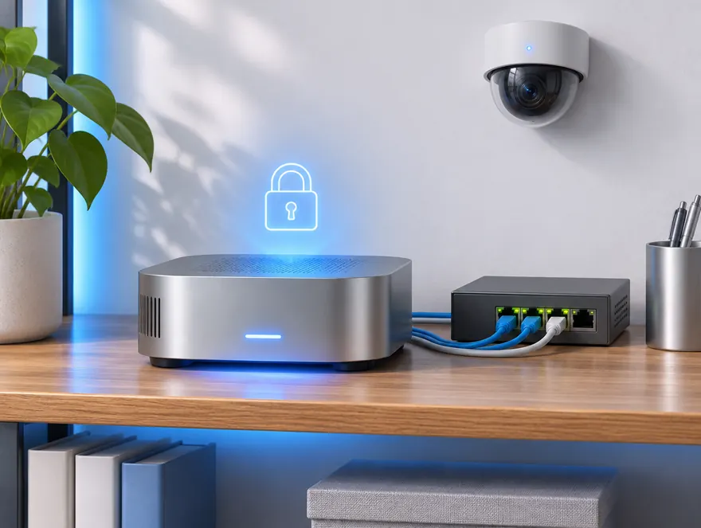
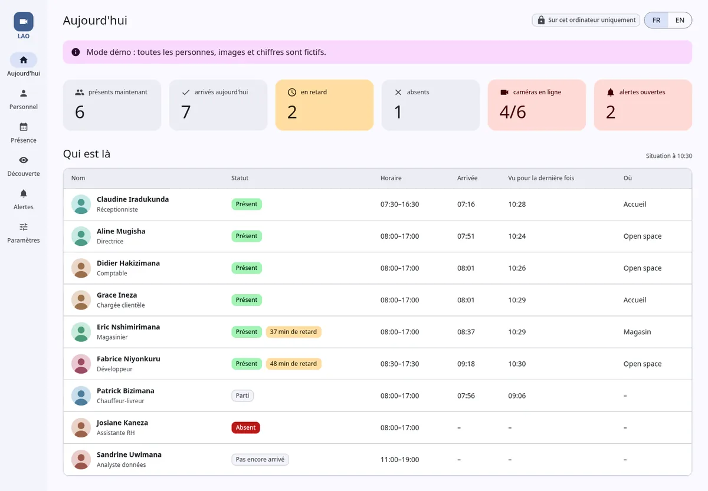
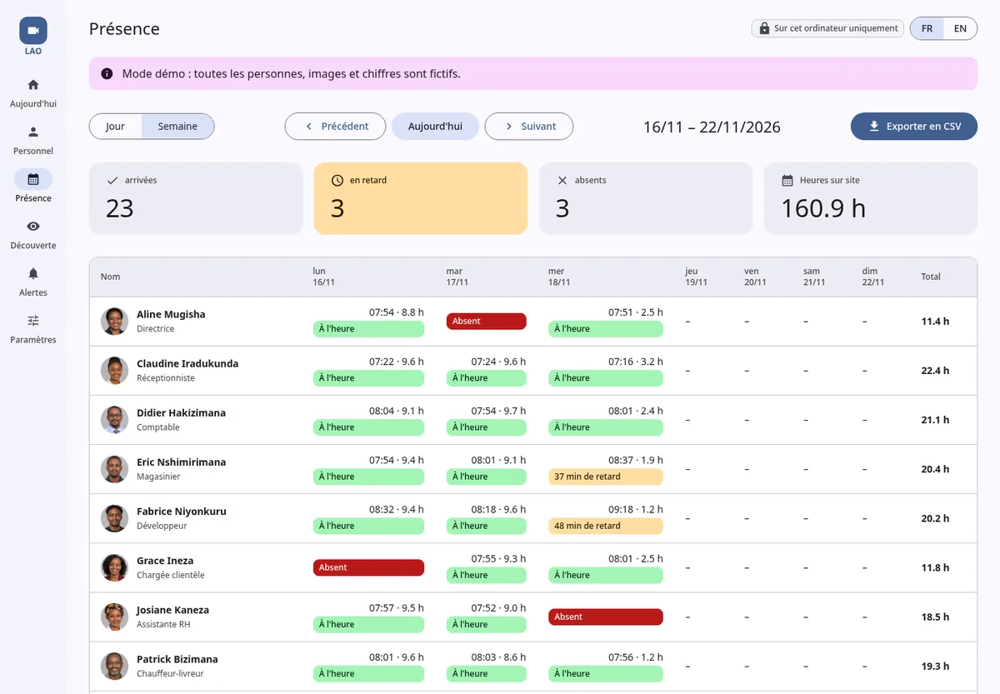
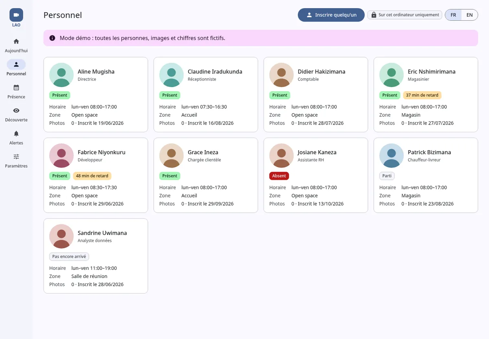
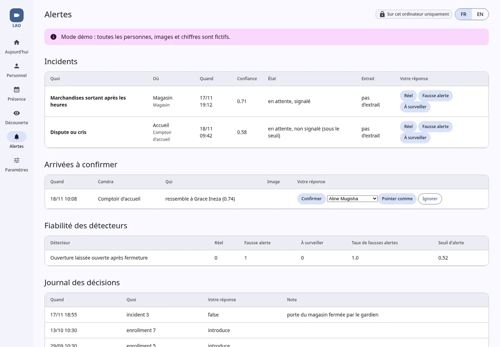
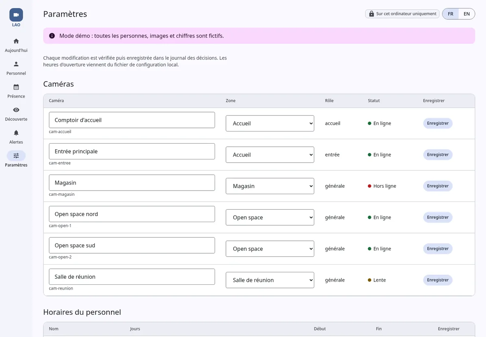
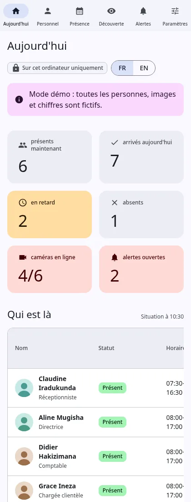

Security intelligence · built in Burundi
Local AI that keeps watch over your office.
Live AI Office turns the cameras you already have into a security intelligence dashboard focused on staff: who is in, who is late, hours on site and alerts, in real time. No cloud: pictures and data never leave the office.
- 100%local: no picture sent online
- 0cloud subscription or time clock to buy
- FR / ENbilingual interface
- Real timetoday's presence and late arrivals
The problem
Attendance and security are still managed blind.
Notebooks and spreadsheets
Attendance is written by hand. Late arrivals and absences only show at month end, too late to act.
Hours of video nobody watches
Cameras record, but nobody looks. After an incident, someone has to dig through footage.
Costly, offshore solutions
Biometric clocks and cloud services are expensive and send staff pictures to foreign servers.
How it works
Local and private by design.
All processing runs on an ordinary office computer. The dashboard can only be opened on that computer.
No cloud
Pictures, faces and timesheets stay in the office. Nothing is sent online.
Encrypted at rest
Encrypted database and video clips, keys in the system keychain.
Locked-down access
Served on the computer itself, a per-session token, origin checks, a strict security policy.
Human in control
Enrolments, confirmations and alert answers go through the manager, and are logged.
Minimisation
Work areas only; unreviewed people deleted after 3 days; clips kept for a limited time.
Existing hardware
An office computer and the cameras already in place are enough.

Features
One dashboard for your staff.
Screens from demo mode: fictional employees, generated silhouettes, a simulated day.

Today
Who is in now, arrivals and late arrivals per employee, employees per area, each camera's health and open alerts.

Attendance
Day and week timesheets against the planned shifts, CSV export for payroll and HR.

People
Enrolled employees with their role, shift and today's status.

Alerts and log
Incidents with an encrypted clip, one-click answers, thresholds that adapt, and a log of every decision.

Settings
Cameras, opening hours, staff shifts and retention periods.

Impact
For offices, SMEs and the public sector.
Punctuality
Late arrivals are visible the same day, with no time clock or queue.
Fairer payroll and HR
Objective, exportable timesheets replace notebooks.
Security that helps
Incidents arrive with their clip instead of hours of footage to review.
Data sovereignty
Built in Burundi and keeps data on site: administrations, banks, schools, hospitals, SMEs.
Low cost
No subscription or biometric hardware: it reuses the existing cameras.
Digital jobs
Installation, training and maintenance by local technicians.
Roadmap
A modular architecture, ready to grow.
- Now · v1
Today, Attendance (day, week, CSV), People, Alerts and log, Discovery, Settings, demo mode, FR / EN.
- December 2026
Guided enrolment in the app (webcam or camera, angles, quality checks) and a one-command start.
- Q1 2027
Office pilot, monthly reports, several sites, manager and HR roles.
- Q2 2027
Optional new security modules, added as sections of the same dashboard, as needs and the law allow.
- Then
Impact assessment, certification, rollout to administrations and SMEs.
Let's talk about your office.
A demo on made-up data is available on request.
Alex Nahimana · POPEKI SURL · alex@popeki.com